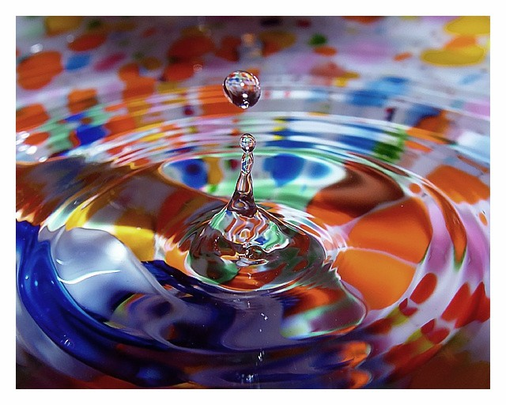

Кольорова гамма
Не варто недооцінювати вплив кольору на людину. Часом колір стимулює виникнення певних реакцій, які можуть позначитися на прийнятті рішень. Колір впливає на апетит, на тиск. Наприклад, в похмурий день, коли за вікном ми бачимо тільки сірість, настрій відразу починає погіршуватися. Позитивна енергетика пропадає, а навколишній світ раптом стає неприємним і ворожим. Сучасна медицина тільки недавно звернула увагу на кольоротерапію. Суть цієї методики - використання кольору в якості способу впливу на психічний, емоційний і фізичний стан людини.
